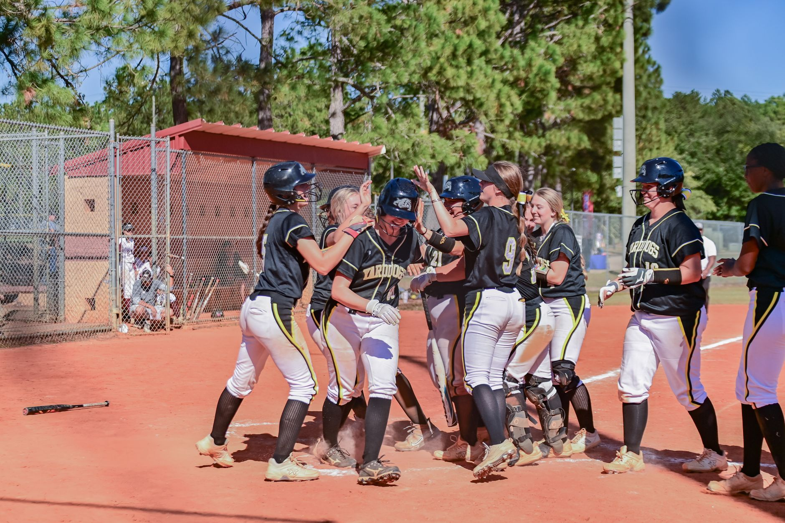

A dramatic comeback in the clubhouse and on the field
The atmosphere at the stadium was electric as the Tampa Bay Rays stepped onto the diamond facing a daunting deficit. After dropping three consecutive games, the pressure on the Rays was immense. Every pitch felt heavy, and every swing carried the weight of a season on the line. However, the team showed a level of resilience that has defined their entire run through the playoffs this year.
The game began with the San Francisco Guards asserting dominance early. Their pitching staff looked untouchable through the first three innings, stifling the Rays' lineup and forcing quick outs. It seemed as though the Guards were coasting toward another victory that would effectively end the series. But baseball is a game of unpredictable shifts, and the Rays were not ready to go home just yet.
By the middle innings, the momentum began to wobble. Small tactical adjustments by the Rays' coaching staff started to pay dividends. They began working deeper counts, forcing the Guards' pitchers to throw more strikes, which eventually led to the breakthrough the fans had been waiting for.
Key turning points that decided the game
The turning point arrived in the bottom of the fifth inning. With two runners on base and two outs, a clutch double sent the crowd into a frenzy and tied the score. This single moment broke the shutout and signaled to the Guards that the Rays were finally finding their rhythm. The defensive intensity also shifted, with the Rays making several spectacular plays to prevent the Guards from reclaiming the lead.
We never stopped believing that we could claw our way back into this series, regardless of the score in the early innings.
Guards struggle to maintain their early lead
For the San Francisco Guards, this loss is a bitter pill to swallow. They played nearly flawless baseball for the first half of the game, utilizing a combination of high-velocity fastballs and sharp breaking balls to keep the Rays off balance. Their ability to execute fundamental plays was evident, making the late-game collapse even more shocking to the traveling fans.
The primary issue for the Guards appeared to be fatigue and a lack of depth in the bullpen. As the game progressed into the later stages, the relief pitchers struggled to replicate the dominance shown by the starters. This allowed the Rays to capitalize on mistakes that would typically be punished in a different matchup.
Despite the loss, the Guards' offense showed flashes of brilliance. Their ability to put the ball in play and move runners around the bases kept the pressure on the Rays' defense throughout the night. They will need to find a way to close out tight games if they hope to advance to the World Series.
Statistical breakdown of the Rays victory
Looking at the numbers, the Rays' victory was built on efficiency rather than sheer power. While they didn't hit many home runs, their ability to string together singles and doubles was the difference maker. Their strikeout-to-walk ratio improved significantly compared to the previous three games, showing a more disciplined approach at the plate.
These statistics highlight a team that has learned from its mistakes. The Rays are no longer just playing hard; they are playing smart. They are reading the pitchers, understanding the defensive shifts, and executing the game plan with precision.
Looking ahead to the remainder of the series
With the series now knotted up, the momentum has shifted entirely. The Rays enter the next phase of the ALCS with newfound confidence, while the Guards must regroup to prevent the series from slipping away. Every game moving forward will be a high-stakes battle that could determine which team moves on to the championship stage.
Fans should prepare for an intense series of games. The psychological aspect of the series cannot be understated; the Rays are riding a wave of momentum, while the Guards are dealing with the frustration of a blown lead. This dynamic often leads to unpredictable and highly entertaining baseball.
For those trying to keep up with the logistics of the playoffs, remember that scheduling can be tricky. If you missed any previous updates, be sure to check our coverage on the ALCS Game 4 Postponed: New Schedule for Game 4 and 5 to stay informed about upcoming matchups and timing changes. Staying on top of the schedule is essential for any dedicated baseball fan.
See Also
If you enjoyed this Baseball News article, check out ALCS Game 4 Postponed: New Schedule for Game 4 and 5 for more useful reading.